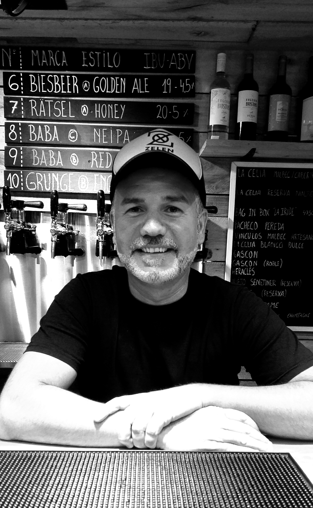

Hola yo soy Roberto uno de los dueños de San San Blas Growler Station, estoy todo los días
de 18 hasta las 22 horas. Los invito a pasarse a tomar una birritas y estar un toque relajado
disfrutando del ambiente.

Hola Nosotros somos San Blas Growler Station, somos una cerverceria artesanal que ademas
de cerversas vendemos una gran cantidad de vinos, y para los que vengan con niños tenemos
jugo, gaseosas y agua.Este es un lugar familiar donde pueden venir cualquiera con sus niños
y mascotas.
Bebidas
Marca Estilo IBU-ABV
Marca Estilo IBU-ABV
Biesbeer Pilsen Lager 20-5%
Baba * Americana Ipa 40-6%
Bruder Bier * Apa 35-5%
Finn Cream Ale 18-4,5%
Baur Belgian Red 20-5%
Biesbeer Golden Ale 19-4,5%
Ratsel Honey 20-5%
Baba * Neipa 40-5%
Baba * Red Ipa 55-6%
BrÜder Bier Stout 22-5%
Estas son las variedades de bebidas que se pueden recargar en los botellones o en las
botellas descartables. Aqui puedes ver los demas productos que tenemos,Mira nuestros productos